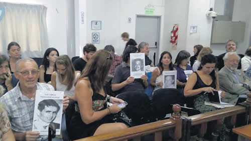

Real Chubut - Agencia de Noticias


“La empresa es responsable, nos marcó”

Ante el Tribunal Oral Federal 1 de San Martín, Pedro Troiani, ex trabajador de Ford Motors, contó cómo fue secuestrado en la planta de General Pacheco a partir de información aportada por la empresa. También habló del encierro y las torturas que sufrió junto a otros obreros.
Hacía seis años que Pedro Troiani era delegado de la sección de reparación final de la planta de General Pacheco de la Ford Motors Argentina, en donde trabajaba desde principios de la década del 60, cuando fue secuestrado y torturado en las instalaciones de la empresa, desaparecido en la comisaría de Tigre y “blanqueado” en Devoto y la cárcel de La Plata. Ese periplo duró un año, pero sus consecuencias fueron más extensas. “La tortura la sufrimos porque estuvimos ahí, pero los familiares nuestros más que nosotros, porque no sabían dónde encontrarnos. Perdí un montón de cosas, perdí mi trabajo, perdí mi libertad”, contó ante el Tribunal Oral Federal 1 de San Martín, su primer testimonio en el juicio oral que analiza responsabilidades civiles y militares por esos crímenes que sufrieron 24 obreros de la automotriz.
Troiani fue detallista durante su testimonio, atento a responder cada pregunta que le realizaron a lo largo de más de tres horas. El otro obrero que iba a declarar ayer, Carlos Propato, no pudo hacerlo por cuestión de tiempo. Fueron, ambos, de los primeros en llegar a los tribunales de San Martín. Estaban contentos y nerviosos. Troiani temía olvidarse de datos, que la emoción “lo traicione”. Esperó más de 40 años el momento que llegó finalmente ayer. Relató no solo lo que sucedió en la fábrica y lo que sufrió en carne propia entre el 24 de marzo y mayo de 1977, también describió la cotidianidad de la fábrica antes del golpe de Estado, los regímenes rígidos de seguridad y control que la empresa ejercía sobre los empleados.
El abogado Tomás Ojea Quintana –que comparte con Marcos Aldazábal y Elizabeth Gómez Alcorta la querella en representación de los obreros– lo consultó sobre los años previos al 24 de marzo de 1976 y Troiani respondió que los primeros años de la década fueron “buenos”, pero “la situación comenzó a complicarse a medida que avanzaron los años”. Para cuando falleció Perón, “la inflación nos comía, acordábamos un convenio con la empresa y a los dos meses no servía más”.
No obstante, en aquellos años, el cuerpo de delegados tenía diálogo con la empresa: con Guillermo Galarraga, el gerente de Relaciones Laborales, incluso con el presidente Nicolás Courat. A Pedro Muller, sindicado como el segundo en la escala de poder de la empresa, lo veía “casi todos los días”, ya que controlaba “permanentemente” la producción en la planta en donde él trabajaba. A Héctor Sibilla, entonces jefe de seguridad de la planta, también lo conocía. Ambos están acusados de delitos de lesa humanidad cometidos contra Troiani y otros 23 obreros de la Ford durante la última dictadura. Junto a ellos también está acusado el ex jefe de Institutos Militares Santiago Riveros. Ninguno de los tres participó de la audiencia ayer. Courad y Galarraga fallecieron antes de poder ser juzgados.
Tras el golpe, “todo cambió”. El 24 de marzo de 1976 a la fábrica “la invade” el Ejército. “Decenas de uniformados de fajina adentro de la fábrica, hasta tanquetas en las puertas había.” Ese día comenzaron a controlar el ingreso del personal. El Ejército y la guardia de la empresa “les pedían documentos, credenciales, a los empleados, a (Marcelino) Reposi –uno de los empleados– la guardia no lo dejó entrar y lo entregó al Ejército que lo cargó en un camión y lo ingresó a la fábrica. Reposi no fue el único empleado desaparecido esa mañana. El Ejército se llevó a otras dos personas, delegados del sector Comedor: uno de ellos era Enrique Constanzo. Con los días, vería a los soldados comer en el comedor de la fábrica y recorrer la planta armados, recordó también a los camiones de la fuerza cargando combustible dentro de la planta. Supo que la fuerza respondía a Campo de Mayo.
El mismo día, Galarraga citó a los delegados y les comunicó que las actividades gremiales quedaban suspendidas, que desde entonces los delegados serían los capataces y que “si alguno hacía algo la iba a pasar mal”. Los delegados entraron “en pánico, entre los compañeros desaparecidos y las amenazas de la empresa”.
Al día siguiente, las familias de los trabajadores que no habían regresado a sus casas se acercaron a la planta, pero la dirigencia de Ford no los recibió. Los delegados, en cambio, sí. Entre ellos, él, que intentó sin éxito hacer averiguaciones. El último intento lo hizo con los soldados del Ejército que estaban apostados en la puerta 2. Fue “cuatro o cinco días” después del golpe. Preguntó “quién estaba a cargo” y pidió hablar con esa persona. Lo citaron a las 14. Parado cerca de esa puerta habló con el “teniente coronel (Antonio) Molinari”, a quien le pidió explicaciones por los compañeros que se habían llevado y acusó de “abuso de autoridad”.
Días después fue a trabajar y su capataz lo recibió al grito de “Troiani no te muevas de tu lugar porque te están vigilando”. El respondió con enojo, pero sabía que se lo llevarían. Sucedió una hora después. A bordo de una camioneta Ford F100 que se usaba para el mantenimiento interno de la planta entre ocho y diez hombres armados y con uniforme verde oliva lo fueron a buscar a su puesto. “Queda usted detenido a disposición del Poder Ejecutivo Nacional”, dijo que le dijeron. El pidió buscar sus documentos. Le respondieron que “adonde va no necesita documentos”. Lo esposaron, pero no lo subieron a la camioneta. Lo llevaron caminando hasta el puesto de un ex subdelegado de reparación final, Juan Carlos Conti. Luego levantaron a Carlos Propato, del sector de Pintura, a Rubén Traverso y a otra persona más. Entonces sí, a los cinco los subieron a la camioneta y los llevaron a uno de los cinco quinchos que había en el campo de deportes de la planta, el único que fue tapiado con lona verde. “Lo convirtieron en un lugar de tortura”, sostuvo sobre ese espacio modificado para la ocasión.
“Me cubrieron la cabeza con mi remera, me sacaron las esposas y me ataron las manos con alambre. Nos tiraron al piso, nos patearon la cabeza, nos insultaron. Ahí sufrimos las peores torturas, nos maltrataron como a los peores, nos sentimos unas ratas”, describió. Los dejaron en el piso, esposados, golpeados y sin comer ni beber hasta entrada la noche. Entonces, vino el primer traslado. Los cargaron así como estaban, maniatados y encapuchados, en la caja de la camioneta, que él cree que era la misma F100 con la que los habían recogido de sus puestos de trabajo. Por las características del camino recorrido, cree que tomaron la calle Henry Ford y luego cruzaron una barrera rumbo a Tigre. Cuando llegaron a la comisaría de ese partido los recibieron con un simulacro de fusilamiento: “Acá se mueren todos, ustedes no tienen ni dios, ni patria ni hogar. Son marxistas”. En el sector de celdas se encontraron con algunos de los compañeros de la Ford que estaban desaparecidos, “golpeados, torturados”. También se encontraron con trabajadores de otras fábricas, como Atarsa, Terrabusi y algunos astilleros de Tigre.
Permanecieron encerrados en una celda de 2,5 por 2,5 metros. “Eramos diez, once encerrados ahí, nos teníamos que turnar para tirarnos en el piso a dormir, teníamos que hacer nuestras necesidades ahí porque no nos dejaban ir al baño, nunca nos apagaban la luz”.
A los días, lo llamaron a un interrogatorio que dirigió Molinari, el teniente coronel al que le había pedido explicaciones dentro de la fábrica. Sobre el escritorio del militar vio duplicados de la credencial suya y de la de sus compañeros de la Ford. “Ahí me convencí de que la empresa estaba complicada con todo esto. Porque ¿de dónde, si no, habían conseguido esa información?” Troiani no tiene dudas de que la empresa, “nos marcó”. “¿Cómo nos encontraron, si no, entre miles de trabajadores? La fábrica es responsable. Además, nos abandonaron. En lugar de enviarnos telegramas advirtiendo que nos habíamos ausentado sin aviso de nuestros puestos de trabajo deberían haberles dicho a nuestras familias que nos había llevado el Ejército.” Incluso, apuntó que los trabajadores sospechaban que había “gente de inteligencia” en la oficina de Personal de la empresa que había llegado a la planta antes del golpe.
Unos días después de permanecer en la celda de la comisaría de Tigre les dijeron que iban a salir en libertad. “Esa noche no dormimos.” Al otro día, el traslado no fue hacia sus casas sino hacia Devoto, donde pasaron seis meses presos. Después de una requisa feroz, los trasladaron a La Plata.
Troiani salió en libertad en mayo de 1977. Recordó “la verdugueada terrible” de la que fue víctima en su salida de la cárcel. Que le costó encontrar la ruta, que corrió con miedo por las calles porque creía que lo iban a “fusilar por la espalda”. Hasta que llegó la democracia, permaneció bajo libertad vigilada. No volvió a pisar la planta de General Pacheco. No imaginó nunca que le pasaría lo que le pasó: “Cuando me fueron a buscar, yo pensé que se trataba de una averiguación de antecedentes, no pensé que iba a perder un año de mi vida. Si no había usado nunca un arma, nunca había integrado una organización armada. En mi casa no se hablaba de política y en la comisión de delegados había personas de diferentes ideologías”.
Fuente: Pagina 12